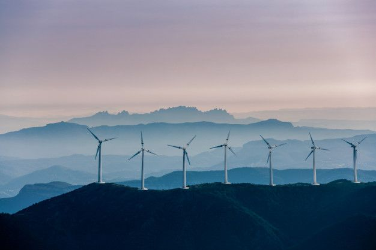

Green energies
Home
About Us
Sustainable energies
Sustainable energy refers to a variety of renewable energy sources that can be replenished indefinitely without exhausting natural resources or causing long-term environmental damage. These sources include: Solar Energy: Capturing the sun’s energy through photovoltaic panels or solar thermal systems.
Wind Energy: Utilizing the kinetic energy of wind with turbines to generate electricity.

Hydropower: Producing electricity from the movement of water, such as rivers or tides.
Geothermal Energy: Harnessing heat from the Earth’s interior for power generation or direct heating.
Biomass Energy: Converting organic materials like wood, agricultural waste, and algae into biofuels or electricity.
Sustainable energy is essential for reducing greenhouse gas emissions, lessening reliance on finite fossil fuels, and ensuring environmental and economic stability. It aids global efforts to tackle climate change and encourages innovation in energy production and storage technologies. Additionally, investing in sustainable energy fosters job creation, enhances energy independence, and improves public health by reducing pollution.